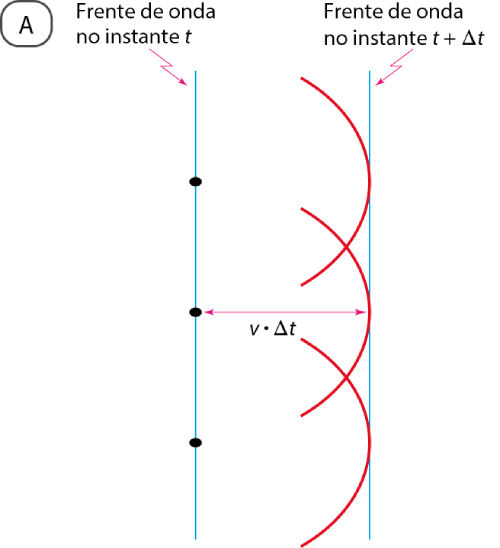
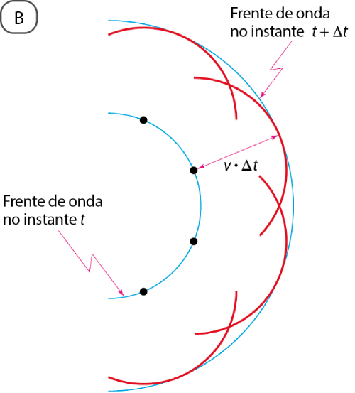

Difração
Difração é o nome dado à capacidade de uma onda de transpor ou contornar obstáculos, como objetos ou fendas. Esse fenômeno foi observado e estudado pelo padre jesuíta italiano Francesco Maria Grimaldi (1618-1663), criador do termo difração.A figura abaixo ilustra esquematicamente o princípio de Huygens para uma frente de onda reta e uma frente de onda circular.


Assim, a capacidade de uma onda transpor um obstáculo (objeto ou fenda), propagando-se além dele, pode ser explicada pelo fato de pontos da frente de onda que atinge o obstáculo comportarem-se como fontes de ondas secundárias.
O fenômeno da difração ocorre quando o comprimento de onda de uma onda tem a mesma ordem de grandeza que as dimensões do obstáculo a ser transposto; por isso, embora todas as ondas possam sofrer difração, esse fenômeno é percebido mais facilmente em determinadas situações. As ondas sonoras, por exemplo, têm grandes comprimentos de onda e podem transpor grandes obstáculos. Por esse motivo, você pode ouvir o som emitido por uma pessoa do outro lado de um muro, apesar de não poder vê-la